Try to get these headers reasonably straight, they will attatch to the logic pcb.
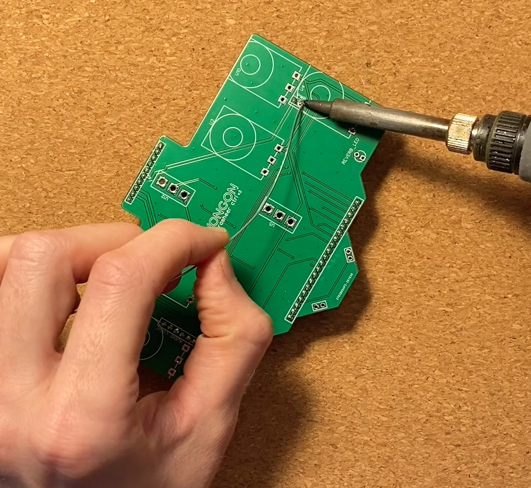 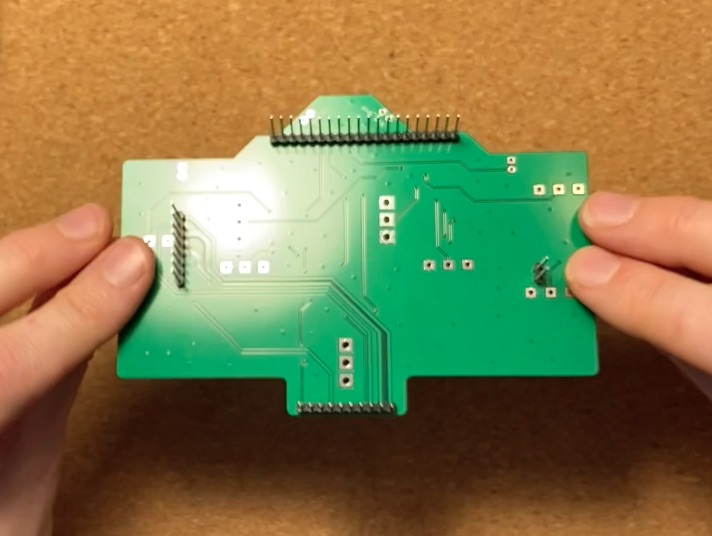Use LED spacer, solder as flush as possible. We want the LEDs to be equal height so they will poke out of the faceplate nicely.
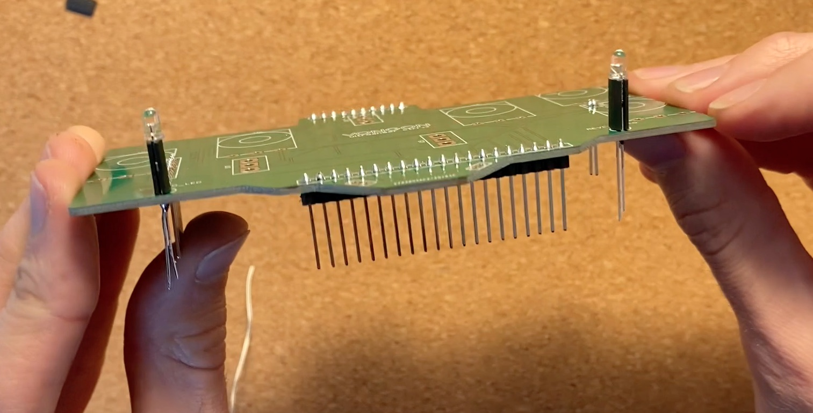These will be soldered to the footswitches after the face plate is on.
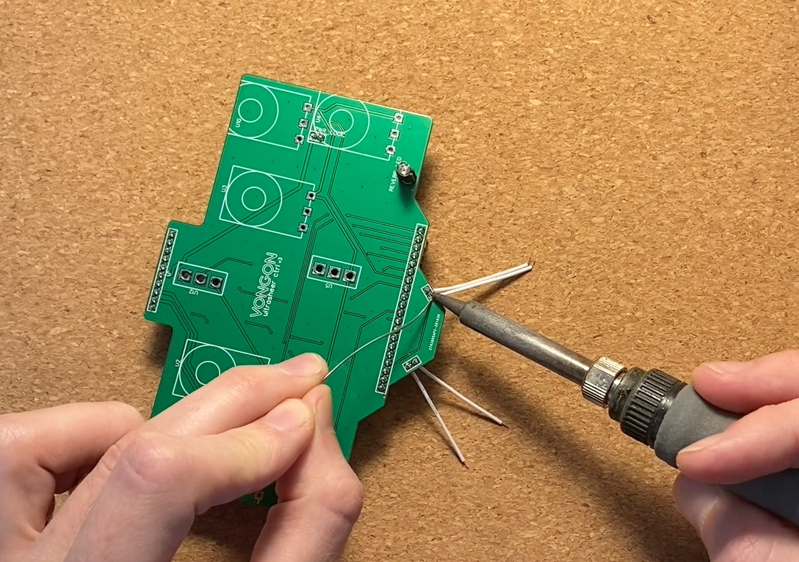a) Insert potentiometers and toggle switches
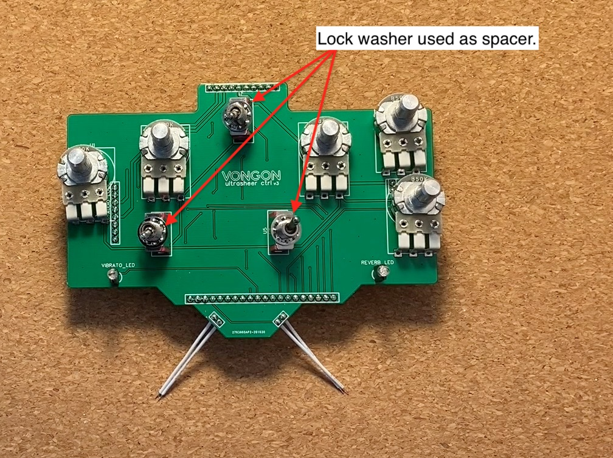b) Put on faceplate
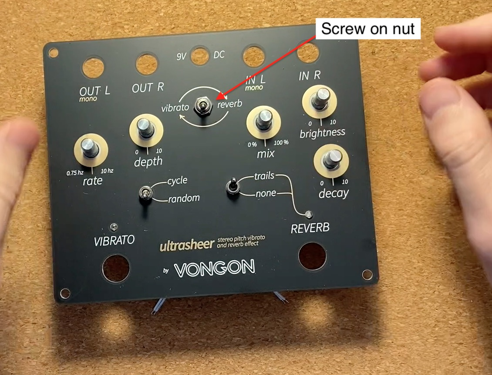c) Solder components
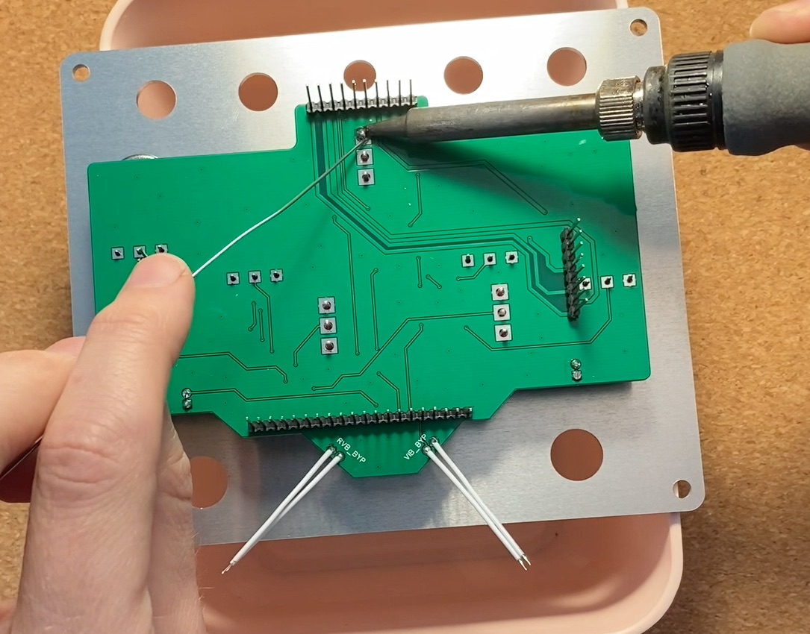Hand tightened, if the switches are tightened too much they can strip.
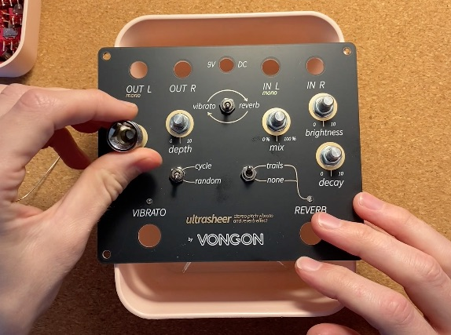Hand tight with socket wrench
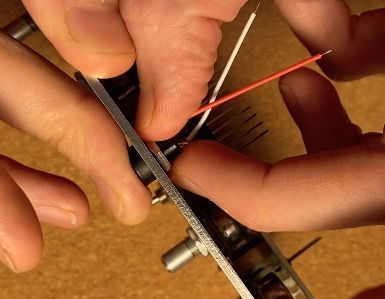a) Inserts audio jacks into faceplate
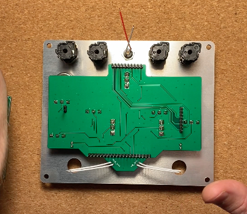b) Fit PCB onto audio jacks and headers
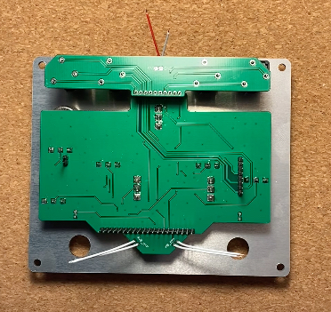c) Solder jacks, headers, and power jack wires
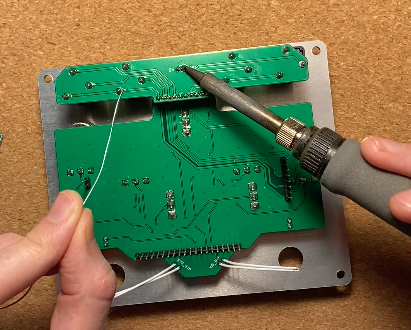d) Screw audio jacks to faceplate, these should be tightened by a wrench.
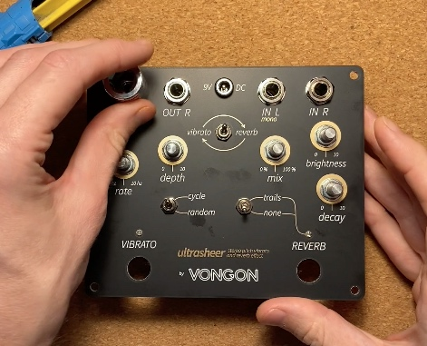The goal is for both foot switches to be equal height out of the faceplate. I typically lay out both switches and match bottom nut placement at the mid point of the threaded connection. Locknut on bottom.
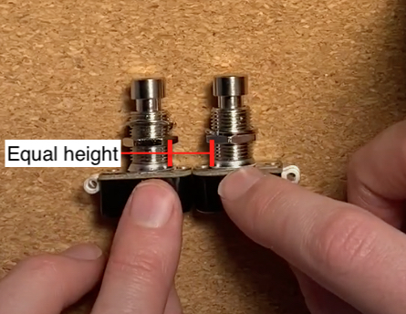Getting these on straight can be tricky. I like to rotate the faceplate so that the "zero" point of the knobs is horizontal.
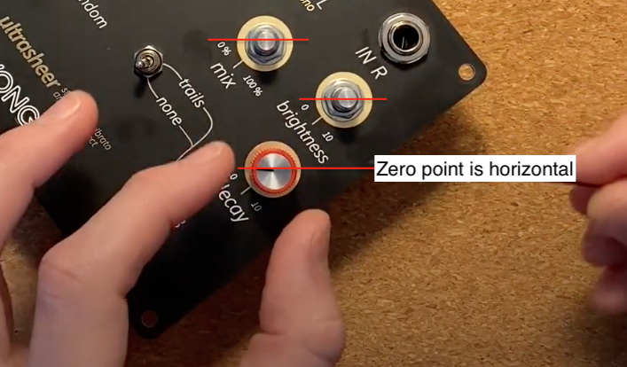